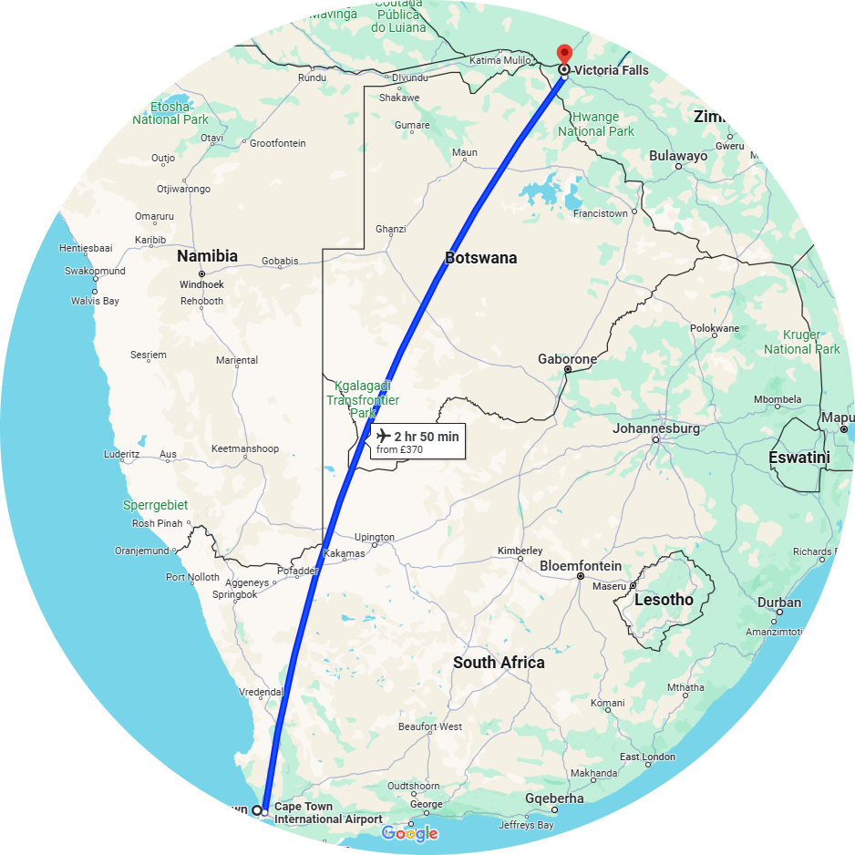

Insica Lodge, Vic Falls

Day 28 |
Depart Hotel 7 am Flight Cape Town to Victoria Falls 9.45 am -12.40 pm 2.55 hrs Airlink 4Z390 Airline reference NJ2H4J |
 |
Insica Lodge, Vic Falls |
|
Afternoon activity Zambezi River Sunset Cruise |
 |